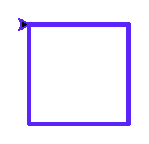
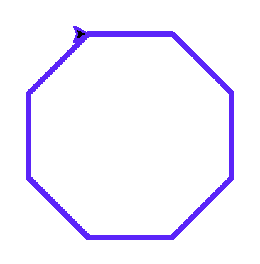

Глава 12 · Множество увлекательных мини-проектов!
Проект: студия многоугольников
Одна и та же формула и один и тот же цикл рисуют треугольник, квадрат, пятиугольник, шестиугольник или восьмиугольник — в зависимости от одного числа.
Используем
Turtleinput()/int()forформулаУровень
★★★ интеграционный
Результат
геометрическая фигура
Что создаём
Программу, которая рисует ЛЮБОЙ правильный многоугольник — не переписывая код, а меняя одно число.
Формула
Правильный многоугольник с storony сторонами всегда
поворачивает на один и тот же угол между сторонами:
formula_ugla.py
ugol = 360 / storony| storony | ugol |
|---|---|
| 3 | 120° |
| 4 | 90° |
| 5 | 72° |
| 6 | 60° |
| 8 | 45° |
Один алгоритм — пять результатов
studiya_mnogougolnikov.py
import turtle
screen = turtle.Screen()
screen.setup(width=300, height=300)
artist = turtle.Turtle()
artist.speed(0)
artist.pencolor("#5B24F9")
artist.pensize(3)
storony = 5
dlina = 75
ugol = 360 / storony
for _ in range(storony):
artist.forward(dlina)
artist.right(ugol)
screen.exitonclick()Результат выполнения

studiya_mnogougolnikov.py
storony = int(input("Сколько сторон? "))
dlina = 300 / storony
ugol = 360 / storony
for _ in range(storony):
artist.forward(dlina)
artist.right(ugol)Данные меняются — алгоритм нет
Та же идея, что и в проекте «Викторина» (§12.9): цикл
for _ in range(storony) и формула ugol = 360 / storony не меняются — меняется только введённое число.



🐞 Debug Lab
Что произойдёт, если ввести storony = 1 или
storony = 2?
Формула работает только для storony >= 3
Многоугольника с одной или двумя сторонами не существует геометрически — код не упадёт с ошибкой (
360 / 1 = 360), но нарисует не то, что ожидалось. Полноценная защита от такого ввода потребует проверки if storony < 3 перед рисованием.Практика: вычисляем угол поворота для многоугольника
Интерактивный ноутбук прямо в браузере — Python 3.14 через Pyodide, без установки
Практика: рисуем многоугольник по введённому числу сторон
Модуль turtle открывает нативное окно Python — выполните локально в VS Code, PyCharm или Jupyter
Практика выполняется локально